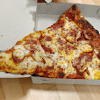

Dough
1 ¼ cups warm water
1 teaspoon active dry yeast
3 cups bread flour
1 ½ teaspoons fine salt
¼ cup olive oil, divided
Sauce:
1 (28 ounce) can plain crushed tomatoes
1 (14 ounce) can pizza sauce (such as Don Peppino®)
Cheese:
8 ounces low-moisture whole-milk mozzarella, very thinly sliced
¼ cup grated Pecorino Romano Cheese
Go Back